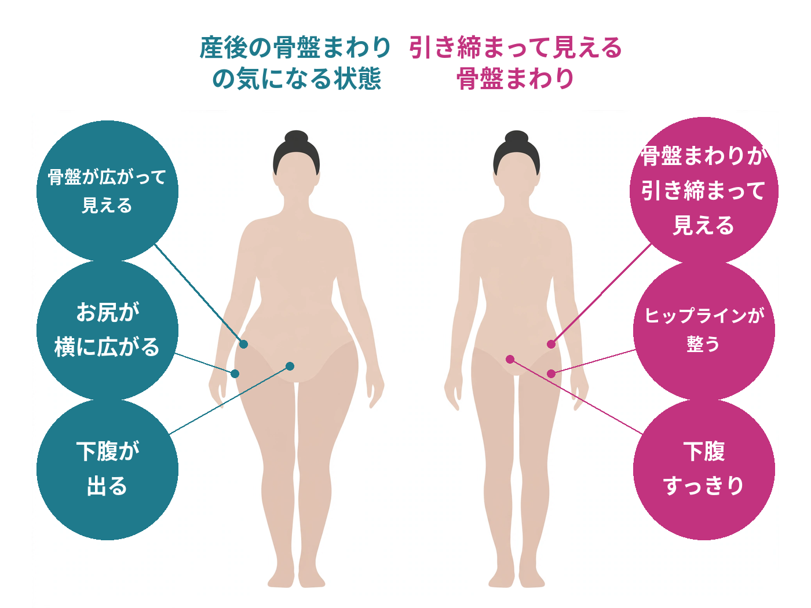

骨盤の広がり（産後の骨盤矯正）
美容整体ステラ・ポラリス東三国｜大阪市淀川区東三国・東三国駅徒歩5分・女性向け

開いた骨盤を締める産後ケア
妊娠と出産の過程で、骨盤はホルモンの影響でゆるみ、赤ちゃんの通り道として開く準備をします。出産後は少しずつ元の状態へ戻っていきますが、育児中の抱っこや授乳の姿勢、睡眠不足などが重なると、骨盤まわりの違和感や姿勢の崩れを感じやすくなります。産前に履いていたボトムスの感覚が変わった、腰まわりが不安定に感じる、といったご相談も少なくありません。このページでは、産後の骨盤まわりの仕組みと、骨盤まわりが安定した状態を目指す当サロンでのケア、ご自宅でできるセルフケアをご案内します。まずは下のチェックで、ご自身の状態を確かめてみてください。
ご予約はこちら（Coubic）こんなお悩みありませんか
- 産前に履いていたボトムスが、腰まわりできつく感じる
- 骨盤まわりがグラグラと、不安定な感じがする
- 抱っこや授乳の姿勢で、肩や背中がガチガチになる
- 腰まわりが重だるく、姿勢が崩れやすい
- 産後の体型の変化が、気になっている
- 睡眠不足が続き、体が休まらない感じがする
- 自分のためだけのリラックス時間が、取れていない
当てはまる項目が多いほど、産後の体の変化と育児の負担が重なり、骨盤まわりが不安定に感じやすい目安とされています。産後の体は、戻る過程そのものが大切な時期です。次のセルフチェックで、今の骨盤まわりの状態の傾向を確かめてみましょう。
簡単セルフチェック（片足立ちチェック）
壁のそばでできる、骨盤まわりの安定感の傾向を知るための簡単な方法です。
- 壁や椅子のそばに立ち、支えに手を添えながら片足を軽く浮かせます。
- 左右それぞれ10秒ほど、体のふらつき具合を確認します。
- 左右でふらつきの差が大きい、骨盤が傾く感じがする場合は、骨盤まわりを支える力が戻りきっていない目安と言われています。無理のない範囲で行ってください。
※これは診断ではありません。ご自身の状態の傾向を知る目安としてお使いください。
骨盤の広がり（産後の骨盤矯正）の原因と仕組み
妊娠・出産と骨盤の変化
妊娠中は、出産に備えて骨盤まわりの靭帯をゆるめるホルモンが分泌され、骨盤は開く準備をします。出産後は少しずつ元の状態へ戻っていきますが、この戻る過程には時間がかかり、その間の姿勢や体の使い方によって、骨盤まわりの安定感に差が出ると言われています。図1のように、産後の骨盤まわりの状態は、腰や姿勢、体型の見え方にもつながっていきます。

図1 産後の骨盤まわりで起こりやすい変化と、骨盤まわりが整った状態のイメージ。体の状態には個人差があります。
育児姿勢の負担
産後の生活は、抱っこ・授乳・おむつ替えなど、前かがみや片側に負担のかかる姿勢の連続です。肩や背中はガチガチになり、腰まわりにも負担が重なります。睡眠不足で体の回復が追いつかない時期でもあるため、違和感や重だるさを感じやすいのは自然なことです。自分の体のケアは後回しになりがちですが、この時期のケアこそ、その後の姿勢づくりの土台になります。
骨盤底筋と支える力
骨盤の底にある骨盤底筋は、内臓を支え、姿勢を安定させる大切な筋肉群です。出産後はこの筋肉群が使いにくくなっていることがあり、骨盤まわりの不安定感や姿勢の崩れと関わると言われています。やさしい体操で感覚を取り戻していくことが、骨盤まわりを締める土台づくりにつながります。
戻る過程と個人差
産後の体の戻り方には大きな個人差があり、時期も人それぞれです。周りと比べる必要はなく、今の自分の状態に合わせたペースでケアを続けることが大切です。痛みのないやさしい手技で骨盤まわりを整え、育児で負担のかかる部位も一緒にゆるめることで、体が軽く感じられる時間をつくっていきます。
セルフケアで足りる場合・サロンケアが向く場合
違和感が軽く、産後の健診でも順調と言われていて、骨盤まわりの体操を続ける余裕がある場合は、まずご自宅でのセルフケアを続けて様子を見る方法があります。一方で、骨盤まわりの不安定感が続いている、育児で肩や背中まで限界に感じる、自分の体を一度プロの目で確認したいという場合は、サロンでのケアが向いている目安になります。サロンでは、産後のお身体に配慮した痛みのないやさしい手技で骨盤まわりを整え、施術後に「骨盤まわりが安定した感じがする」と感じやすい状態を目指します。完全個室のため、育児の合間のご自身のための時間としてゆったりお過ごしいただけます。どちらが正解というものではなく、今の状態に合わせて選ぶことが大切です。
当サロンでのケア
当サロンの産後ケアは、「骨盤まわりをやさしく整え、安定した姿勢の土台をつくる」ことを目指す組み立てです。産後のお身体に配慮し、部位と目的に合わせて3つの手技を組み合わせます。
美容整体：痛みのないやさしい手技で骨盤まわりを整え、姿勢の土台を安定させることを目的に進めます。施術のペースは体調に合わせてご相談ください。
アロマオイルマッサージ：腰やお尻、脚まわりをオイルで丁寧にゆるめ、巡りが流れやすい状態を目指します。香りに包まれるリラックス感の高いケアです。
もみほぐし：育児で負担のかかりやすい肩や背中をほぐし、全身の緊張をゆるめることを目的に進めます。
ケアを通して目指すのは、こんな変化です。
- 骨盤まわりが安定したような感覚へ
- ボトムスの腰まわりのラインが、すっきり見える印象へ
- 腰の重だるさがやわらいで、育児の動きが楽に感じられる状態へ
- 肩や背中まで軽くなり、抱っこ姿勢の負担がやわらぐような感覚へ
- 育児の合間に深くリラックスできる、ご自身のための時間へ
完全個室・完全予約制のため、育児の合間のご自身のための時間として、ゆったりお過ごしいただけます。施術の前後で骨盤まわりの感覚を一緒に確認し、ご自宅で続けやすい骨盤まわりの体操もご案内します。施術のペースは体調に合わせてご相談ください。

施術の流れ
ご来店後、気になる部位やお悩み、ご希望の強さなどをうかがいます。完全個室のため、周りを気にせずお話しいただけます。
骨盤まわりの状態や姿勢、育児で負担のかかっている部位などを一緒に確認し、その日の状態に合わせた施術の進め方をご案内します。
美容整体を中心に、ご希望に応じてアロマオイルマッサージ、もみほぐしを組み合わせて進めます。強さは途中でも調整できます。
施術後の状態を確認し、ご自宅で続けやすいセルフケアのポイントをお伝えします。次回の目安についても、ご希望があればご案内します。
料金
| コース | 通常価格 | キャンペーン価格（12/25まで） |
|---|---|---|
| 80分 | 8,000円 | 3,000円 |
| 100分 | 10,000円 | 4,000円 |
| 120分 | 12,000円 | 5,000円 |
クリスマスキャンペーンは12月25日まで、ご新規様もリピーターの方も対象です。施術内容は当日の状態とご希望に合わせて組み立てます。
ご自宅でできるセルフケア
- 骨盤底筋の体操：仰向けで膝を立て、息を吐きながら骨盤の底を締めるように意識し、5秒キープしてゆるめます。5回を1セットとして、朝晩に行うのが目安です。
- 骨盤ゆらし：仰向けで膝を立て、骨盤を前後にゆっくりゆらします。各10回ほど、寝る前の習慣にすると続けやすくなります。
- 抱っこ姿勢の工夫：抱っこのときは左右の腕を替え、授乳のときはクッションで高さを合わせるなど、片側だけに負担がかからない工夫を取り入れます。
- 肩・背中のストレッチ：両手を組んで前に伸ばし、背中を丸めて肩甲骨の間を広げます。育児の合間に20〜30秒、こまめに行ってください。
ご自宅でのケアに：セルフケア資料ライブラリ（無料）
このお悩みに合わせたセルフケアの考え方を、無料の資料ライブラリでご紹介しています。
セルフケア資料ライブラリを開く →
受診の目安
出産後の体調については、まず産婦人科の健診を受け、医師の指示がある場合はそれに従ってください。強い痛みがある場合や、出血などの異常がある場合も、施術の前に医療機関へご相談ください。
よくある質問
Q. 初めてでも大丈夫ですか？
はい。当サロンは完全予約制・完全個室で、1日3組までのご案内です。最初にカウンセリングで産後の経過や気になる部位をうかがい、無理のない内容から始めます。施術の前後で骨盤まわりの感覚を確認しながら「安定した感じがする」「体が軽くなった」といった違いを一緒に確かめますので、初めての方も安心してご利用いただけます。
Q. 施術は痛いですか？
強さは、ご希望をうかがいながら調整します。産後のお身体に配慮し、痛みのないやさしい手技を基本に進めます。感じ方には個人差がありますので、施術中も遠慮なくお声がけください。
Q. コースはどう選べばいいですか？
80分・100分・120分のコースがあり、ケアしたい部位の広さやお時間のご都合に合わせて選べます。産後ケアで骨盤まわりから腰、肩、背中までゆっくり整えたい方には、100分が選ばれることが多いコースです。迷われる場合は、ご予約の際にお気軽にご相談ください。
Q. 場所と予約方法を教えてください。
大阪市淀川区東三国、東三国駅から徒歩5分です。完全予約制のため、予約サイト（Coubic）またはLINE公式アカウントからご予約をお願いしています。
Q. 男性も受けられますか？
当サロンは女性向けのため、男性の方は、同じ東三国の男性専用整体院「北辰堂」をご案内しています。
施術者について
平賀建人（施術歴30年）
鍼灸師・登録販売者・アロマセラピスト・パーソナルトレーナーの資格を持ち、美容整体を中心に、アロマオイルマッサージ、もみほぐしを、その日の状態とご希望に合わせて組み合わせて施術します。このページの内容は、施術者の知識と経験をもとに作成しています。

料金・ご予約
ご新規様もリピーターの方も 12/25まで
80分 3,000円／100分 4,000円／120分 5,000円
通常価格は80分8,000円／100分10,000円／120分12,000円です。施術内容はご希望に合わせて組み立てます。
営業時間：月〜土 17:00〜23:00／日 10:00〜23:00（完全予約制）｜電話：080-2468-3086
大阪府大阪市淀川区東三国2丁目25番4号101（東三国駅徒歩5分）